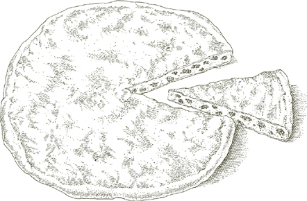
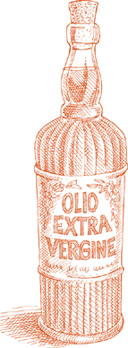
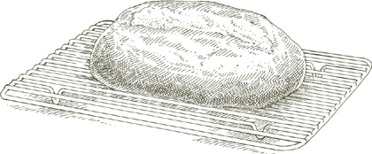
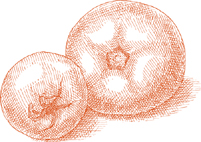

BПРЕЖДЕ ЧЕМ БЫЛО печь, был хлеб. Его пекли в очаге, где тесто раскладывали на каменной плите и посыпали горячей золой. Из этого очага хлеб —panis focacius (фокус по латыни означает «очаг») — сегодня приходит мягкий, квасной фокачча.
Фокачча всегда начинается с соленого теста, обогащенного оливковым маслом, которое можно испечь в чистом виде или покрыть луком, розмарином, шалфеем, оливками, беконом и другими ароматизаторами. Фокачча наиболее тесно связан с Лигурией, Итальянской Ривьерой, и ее главным городом Генуей. Во многих городах севера его, собственно, и не называют фокачча вообще, но пицца Дженовезе, Пицца по-генуэзски. Однако в Болонье, если вы ищете фокачча, подходящее слово для использования кресентина; во Флоренции, Риме и некоторых других частях центральной Италии это Скьяччата. Если вы попросите фокачча в Болонье или Венеции вам угостят очень сладким панеттоне-подобный торт, усыпанный цукатами и изюмом.
TОН ТЕСТО по приведенному здесь рецепту получается густое и нежное фокачча с хрустящей поверхностью, которую вы можете покрыть обжаренным луком по-генуэзски, как описано ниже, или изменить одним из указанных альтернативных способов, или придумать собственный подходящий вариант.
На 6 порций
ДЛЯ ТЕСТА
1 упаковка активных сухих дрожжей
2 стакана теплой воды
6½ стакана неотбеленной муки
2 столовые ложки оливкового масла первого отжима
1 столовая ложка соли
Прочная прямоугольная металлическая форма для выпечки, желательно черная, размером примерно 18 на 14 дюймов или ее эквивалент.
Оливковое масло экстра вирджин для смазывания сковороды.
Камень для выпечки
Смесь ¼ стакана оливкового масла первого холодного отжима, 2 столовых ложек воды и 1 чайной ложки соли.
Кондитерская кисть
ДЛЯ ЛУКОВОЙ НАЧИНКИ
2 столовые ложки оливкового масла первого отжима
4 стакана лука, нарезанного очень-очень тонкими кусочками
1. Растворите дрожжи, размешав их в ½ стакана теплой воды, и дайте постоять примерно 10 минут или чуть меньше.
2. В миске соедините дрожжи и 1 стакан муки, тщательно перемешайте. Затем добавьте 2 столовые ложки оливкового масла, 1 столовую ложку соли, ¾ стакана воды и половину оставшейся муки. Тщательно перемешайте, пока тесто не станет мягким, но плотным и не перестанет прилипать к рукам. Добавьте оставшуюся муку и ¼ стакана воды и еще раз тщательно перемешайте. Добавляя муку и воду в последний раз, оставьте немного того и другого и добавляйте ровно столько, сколько вам нужно, чтобы тесто получилось эластичным, мягким, но не слишком липким. Например, в очень влажный и дождливый день вам может понадобиться меньше воды и больше муки.
3. Достаньте тесто из миски и несколько раз сильно шлепните по нему, пока оно не вытянется в длину. Дотянитесь до дальнего конца теста, сложите его на небольшое расстояние к себе, оттолкните ладонью, сгибая запястье, сложите и снова оттолкните, постепенно скатывая и приближая к себе. Он будет иметь коническую, рулонообразную форму. Возьмите тесто, держа его за один из заостренных концов, поднимите его высоко над столом и снова сильно шлепните по нему несколько раз, растягивая его в продольном направлении. Дотянитесь до дальнего конца и повторите разминающее движение тыльной стороной ладони и запястьем, снова приближая его к себе. Обработайте тесто таким образом в течение 10 минут. В конце придайте ему круглую форму.
4. Смажьте середину противня примерно 2 столовыми ложками оливкового масла, выложите на него замешанное округлое тесто, накройте влажной тканью и оставьте подниматься примерно на 1,5 часа.
5. Для начинки: Положите 2 столовые ложки оливкового масла и весь нарезанный лук в сотейник, включите средний огонь и готовьте лук, часто помешивая, пока он не станет мягким, но не слишком мягким. Оно все равно должно быть слегка хрустящим.
6. По истечении указанного времени для подъема растяните тесто в форме для выпечки, распределяя его по краям так, чтобы оно покрывало всю форму на глубину примерно ¼ дюйма. Накройте влажным полотенцем и дайте тесту подняться в течение 45 минут.
7. Минимум за 30 минут до начала выпечки поставьте камень для выпечки в духовку и разогрейте духовку до 450°.
8. По истечении второго времени подъема теста, держа пальцы рук напряженными, проткните тесто по всей поверхности, сделав кончиками пальцев множество маленьких углублений. Смесь масла, воды и соли взбивайте небольшим венчиком или вилкой в течение нескольких минут, пока не получите достаточно однородную эмульсию, затем медленно вылейте ее на тесто, распределяя кистью до краев формы. Вы обнаружите, что жидкость скапливается в углублениях, сделанных кончиками ваших пальцев. Выложите приготовленный лук поверх теста и поставьте форму на среднюю решетку разогретой духовки. Проверьте фокачча через 15 минут. Если вы обнаружите, что одна сторона готовится быстрее, чем другая, переверните сковороду соответствующим образом. Выпекайте еще 7–8 минут. Поднимите фокачча лопаточками достаньте из формы и переложите на решетку для охлаждения.
Служить фокачча теплой или комнатной температуры в тот же день. Лучше не хранить его дольше, но если необходимо, лучше заморозить, чем хранить в холодильнике. Разогрейте в очень горячей духовке 10–12 минут.
Примечание кухонного комбайна  Предыдущие два шага можно выполнить в кухонном комбайне, но ручной метод, помимо физического удовлетворения, дает фокачча с лучшей текстурой.
Предыдущие два шага можно выполнить в кухонном комбайне, но ручной метод, помимо физического удовлетворения, дает фокачча с лучшей текстурой.
Из ингредиентов предыдущего рецепта фокаччи с луком исключите лук и растительное масло, а также не добавляйте соль в смесь масла и воды. Выполните все остальные шаги рецепта. Смажьте тесто маслом и водой, посыпьте его 1½ чайной ложки крупной морской соли. Выпекайте, как указано в основном рецепте.
Из ингредиентов рецепта Фокачча с луком, исключите лук и растительное масло и добавьте несколько коротких веточек розмарина. Сделайте фокачча как указано в основном рецепте. Когда через 15 минут вы проверите его ход в духовке, разложите по нему небольшие веточки розмарина и завершите выпекание.
Из ингредиентов рецепта Фокачча с лукомопустите лук и растительное масло и добавьте 20 свежих листьев шалфея, довольно мелко нарезанных, и несколько целых листьев. Растягивая тесто в форме перед его вторым подъемом, как указано в основном рецепте, добавьте в тесто нарезанный шалфей, распределяя его как можно более равномерно. испечь фокачча как указано в основном рецепте. Когда вы проверите прогресс через 15 минут, разложите по нему тонкую россыпь свежих цельных листьев шалфея и завершите выпекание.
Из ингредиентов рецепта Фокачча с луком, исключите лук и растительное масло, уменьшите количество соли в смеси масла и воды до ½ чайной ложки и добавьте 6 унций черных греческих оливок. Это должны быть тонкокожие круглые плоды, цвет которых варьируется от темно-коричневого до черного. Не используйте фиолетовый конический сорт Каламата. Разрежьте оливки по всей середине и освободите их от косточки, получив из каждой оливки по две половинки. После того, как вы сделали углубления в тесте на сковороде, как указано в основном рецепте, вставьте оливки срезанной стороной вниз в углубления, глубоко погрузив их в тесто, затем смажьте тесто смесью масла, воды и соли. испечь фокачча как указано в основном рецепте.
TЗДЕСЬ ресторан в Болонье, столы которого на протяжении почти столетия всегда были полны. Их секрет – это традиционная кухня, которая удовлетворяет самый традиционный вкус – Болоньезе. Ресторан — «Диана», и женщины на кухне до сих пор вручную раскатывают макароны длинной болонской скалкой, получая несравненные тортеллини, тальятелле, и лазанья. Пока вы ждете тортеллини, официант поставит к вам на стол тарелку толстого мортаделла кубики и нарезанная пармская ветчина, а также квадратики того, что, вероятно, является самым пикантным из всех фокачча, Болонья полумесяц с беконом. Следующий рецепт адаптирован из версии Дианы. Вот пример, в котором я предпочитаю использовать кухонный комбайн, потому что он наилучшим образом измельчает бекон и равномерно распределяет его в тесте.
На 6-8 порций
¼ фунта бекона, желательно кусок бекона отборного качества
1 ¼ чайной ложки активных сухих дрожжей
1¼ стакана теплой воды
3¼ стакана неотбеленной муки
1¼ чайной ложки соли
Маленькая щепотка сахара
Оливковое масло первого холодного отжима для смазывания миски и сковороды.
Прямоугольная форма для выпечки размером 9 на 13 дюймов, желательно черная.
Кондитерская кисть
1 яйцо, слегка взбитое
1. Нарежьте бекон на кусочки, не снимая с него жира, поместите его в кухонный комбайн и очень мелко нарежьте. Не вынимайте его из чаши процессора.
2. Растворите дрожжи, размешав их, в ¼ стакана теплой воды. Когда он полностью растворится, через 10 минут или меньше, поместите его в чашу комбайна вместе с 1 стаканом муки, ½ стакана теплой воды, солью и сахаром. Включите процессор. Пока лезвие вращается, постепенно добавляйте остальную муку и оставшиеся ½ стакана воды. Остановите комбайн, когда тесто превратится в комок.
3. Используйте примерно 1 столовую ложку оливкового масла, чтобы смазать внутреннюю часть большой миски. Положите тесто в миску, накройте полиэтиленовой пленкой и поставьте в теплый, защищенный угол, чтобы оно поднялось, пока оно не увеличится вдвое, примерно на 3 часа или чуть больше.
4. Когда тесто увеличится вдвое, поставьте камень для выпечки в духовку и разогрейте духовку до 400°.
5. Тонко смажьте дно формы для запекания маслом. Выложите поднявшееся тесто в центр и аккуратно распределите его пальцами по бокам, пока оно полностью не покроет форму. Будьте осторожны, не оставляйте тонких пятен, иначе они прогорят при запекании. Накройте форму полиэтиленовой пленкой и поставьте в теплый, защищенный угол на 30–40 минут, пока тесто еще не поднимется.
6. Лезвием бритвы вырежьте широкий ромбовидный узор, заштрихованный крестом, на верхней части теста, затем смажьте его взбитым яйцом. Не пытайтесь использовать все яйцо. Поставьте форму на разогретый камень для выпечки и выпекайте 30 минут, пока тесто сверху не приобретет темно-золотой цвет. Достаньте противень и выключите духовку, но оставьте ее дверцу закрытой. Ослабьте фокачча со дна формы длинной металлической лопаткой поднимите ее из формы и наденьте на камень для выпечки в духовке. Возьмите фокачча вытащите через 5 минут и поместите на решетку для охлаждения. Подавайте теплым или комнатной температуры.
TОН РЕЦЕПТЫ для теста для пиццы не счесть. Хотя некоторые формулы, безусловно, лучше других, ни одна из них не может с полным основанием претендовать на звание окончательной. Важно знать, что вы ищете. Мне нравится пицца, которая не является ни слишком хрупкой и тонкой, ни слишком толстой и губчатой, а твердой, жевательной пиццей с хрустящей корочкой. Тесто, которое больше всего оправдало мои ожидания, представлено ниже. Мне никогда не удавалось добиться той текстуры, которая мне нравится, от пиццы, испеченной на противне, поэтому я предпочитаю готовить ее прямо на камне для выпечки.
На 2 круглые пиццы шириной около 12 дюймов, в зависимости от того, насколько тонкими вы их делаете.
1½ чайной ложки активных сухих дрожжей
1 стакан теплой воды
3½ стакана неотбеленной муки
Оливковое масло первого холодного отжима, 1 столовая ложка для теста, 1 чайная ложка для миски и немного для готовой пиццы.
½ столовой ложки соли
Камень для выпечки
Пекарская кожура (лопатка)
Кукурузная мука
1. Полностью растворите дрожжи в большой миске, смешав их с ½ стакана теплой воды. Когда растворится, через 10 минут или меньше, добавьте 1 стакан муки и тщательно перемешайте деревянной ложкой. Затем, продолжая помешивать, постепенно добавляйте 1 столовую ложку оливкового масла, ½ столовой ложки соли, ¼ стакана теплой воды и еще 1 стакан муки. Добавляя муку и воду в последний раз, оставьте немного того и другого и добавляйте ровно столько, сколько вам нужно, чтобы тесто получилось эластичным, мягким, но не слишком липким.
2. Достаньте тесто из миски и несколько раз очень сильно ударьте им по рабочему столу, пока оно не растянется примерно на 10 дюймов. Дотянитесь до дальнего конца теста, сложите его на небольшое расстояние к себе, оттолкните ладонью, сгибая запястье, сложите и снова оттолкните, постепенно скатывая и приближая к себе. Поверните тесто на четверть оборота, поднимите его и сильно прихлопните, повторяя всю предыдущую операцию. Поверните его еще на четверть в том же направлении и повторяйте процедуру примерно 10 минут. Придайте замешанному тесту круглую форму.
3. Смажьте внутреннюю часть чистой миски 1 чайной ложкой оливкового масла, выложите в нее тесто, накройте полиэтиленовой пленкой и поставьте миску в защищенный теплый угол. Дайте тесту подняться, пока оно не увеличится вдвое, около 3 часов. Он также может посидеть еще немного.
4. Минимум за 30 минут до начала выпечки поставьте камень для выпечки в духовку и разогрейте духовку до 450°.
5. Обильно посыпьте кожуру кукурузной мукой. Достаньте поднявшееся тесто из миски и разделите его пополам. Пока не оба на вашей кожуре и камне для выпечки можно разместить две пиццы одновременно: положите одну из двух половин обратно в миску и накройте ее, пока раскатываете другую половину. Положите эту половину на кожуру и расплющите ее как можно тоньше, придавая ей круглую форму, используя скалку, но заканчивая работу пальцами. Оставьте обод несколько выше остальных. Альтернативный метод (и лучший способ разжижения теста, если вы можете ему подражать) — это метод пиццерии. Сначала раскатайте тесто в толстый диск. Затем растяните тесто, вращая его на обоих поднятых кулаках, время от времени подбрасывая его в воздух, чтобы перевернуть. Когда он приобретет желаемую форму, положите кружок теста на кожуру, покрытую кукурузной мукой.
6. Положите на тесто начинку по вашему выбору и сдвиньте ее, резко отрывая кожуру, на разогретый камень для выпечки. Выпекайте 20 минут или чуть больше, пока тесто не приобретет светло-золотисто-коричневый цвет. Как только все будет готово, слегка сбрызните оливковым маслом. (Пока выпекается первая пицца, выполните ту же процедуру, чтобы разбавить оставшееся тесто и накрыть его сверху, поместив его в духовку, когда первая пицца будет готова.)
Примечание кухонного комбайна Предыдущие два шага можно выполнить в кухонном комбайне. Имейте в виду, что при ручном методе тесто получается лучше, что он не занимает значительно больше времени, чем использование и очистка комбайна, и может быть более приятным.

PИЗЗА СДЕЛАНО для импровизации и не терпит догм о своих начинках. По всей Италии и по всему миру армии пиццайоли— пекари — каждый день формируют новые комбинации, собирая грибы, лук, перец чили, экзотические овощи и фрукты, ветчину, колбасы, сыры, морепродукты — все, что попадается им под руку. Однако некоторые ингредиенты менее близки по духу, чем другие, а некоторые, такие как, например, козий сыр, производят вкус, который совершенно не соответствует итальянским представлениям о вкусе. Не подавляя спонтанности, когда кто-то хочет приготовить пиццу в идиоматическом итальянском стиле, возможно, будет полезно время от времени обращаться к тем немногим смесям ингредиентов, которые представляют в том месте, где блюдо было создано, самый широкий и давно сложившийся консенсус о том, какая пицца вкуснее всего.
Хотя некоторые историки кулинарии, как это обычно делают историки, оспаривают это, считается, что эта самая популярная из всех начинок была создана, чтобы доставить удовольствие итальянской королеве Маргарите, когда она посетила Неаполь в конце девятнадцатого века. Цвета томатно-красного, белого моцареллы и зеленого базилика, очевидно, являются патриотическими цветами тогда еще нового итальянского флага. Между прочим, супруг Маргариты, Умберто I, кажется, был единственным правителем среди сотен за почти трехтысячелетнюю письменную историю полуострова, чье имя было украшено суффиксом «Добро». Без всяких оговорок его можно прикрепить к начинке, носящей имя его королевы.
Начинка для 2 двенадцатидюймовых пицц, приготовленных из это тесто
ПОМИДОРЫ
1 ½ фунта свежих, спелых, твердых помидоров сливы (см. примечание ниже) ИЛИ 1 ½ стакана консервированных импортных итальянских помидоров сливы, осушенных и нарезанных.
2 столовые ложки оливкового масла первого отжима
Примечание Подлинный вкус неаполитанской пиццы во многом обязан очень спелым, твердым и свежим помидорам сливы Сан-Марцано, которые добавляются в начинку в сыром виде. В короткий сезон, когда доступны местные помидоры исключительной спелости и твердости, пропустите процедуру предварительного приготовления, описанную в шагах 1 и 2 ниже, и используйте их следующим образом:
Очистите помидоры от кожицы с помощью овощечистки с вращающимся лезвием, нарежьте их полосками шириной ½ дюйма, удалив все семена и любые жидкие вещества, и распределите их по тесту для пиццы, когда вы будете готовы покрыть его сверху и запечь.
При работе с помидорами, которые не совсем соответствуют этому описанию, немного приготовьте их, следуя приведенным ниже инструкциям.
1. Если вы используете свежие помидоры, вымойте их в холодной воде, снимите с них кожуру с помощью овощечистки, разрежьте каждый на 4 части и выбросьте все семена и жидкие вещества. Если вы используете нарезанные консервированные помидоры, начните со следующего шага.
2. Положите помидоры в сотейник среднего размера вместе с оливковым маслом, накройте кастрюлю крышкой и включите средний огонь. Через 2–3 минуты снимите крышку и готовьте еще 6–7 минут, часто помешивая, пока помидоры не потеряют всю водянистую жидкость.
МОЦАРЕЛЛА
½ фунта моцареллы, желательно импортной моцареллы из буйволиного молока
НЕОБЯЗАТЕЛЬНЫЙ: в зависимости от моцареллы, 1 столовая ложка оливкового масла первого отжима.
Если вы используете моцареллу из буйволиного молока с очень высоким содержанием сливок или высококачественную влажную свежую моцареллу местного производства, не добавляйте оливковое масло и нарежьте сыр как можно тоньше.
Если вы используете моцареллу коммерческого качества, натрите ее на терке с крупными отверстиями или измельчающим диском кухонного комбайна. Положите его в миску с оливковым маслом, тщательно перемешайте и дайте настояться 1 час, прежде чем использовать его в качестве топпинга.
ДРУГИЕ ИНГРЕДИЕНТЫ
Соль
3 столовые ложки оливкового масла первого отжима
2 столовые ложки свеженатёртого пармиджано-реджано сыр
14 свежих листьев базилика
1. Нанесение топпинга: Если вы используете эту начинку для двух пицц, разделите все ингредиенты на две равные части и используйте одну часть, следуя инструкциям ниже, чтобы покрыть тесто, которое собираетесь отправить в духовку.
2. Сверху равномерно разложите помидоры, слегка посолите и поперчите. сбрызнуть оливковым маслом. Отправьте тесто в духовку и выпекайте 15 минут.
3. С помощью 2 металлических лопаток, по одной в каждой руке, достаньте тесто из духовки, быстро выложите на помидоры моцареллу и тертый пармезан в указанном порядке, а затем верните в духовку.
4. Минут через 5, когда сыр расплавится, достаньте пиццу, сбрызните ее небольшим количеством оливкового масла, как описано в разделе Шаг 6 основного рецепта пиццы и разложите поверх нее листья базилика. Подавайте сразу.
Орегано настолько часто заменяет базилик в начинке «Маргариты», что его острый и волнующий аромат стал отождествляться с самой пиццей. Если возможно, используйте свежий орегано: 1 чайную ложку или ½ чайной ложки, если он сушеный. Посыпьте им частично испеченную пиццу, одновременно добавляя моцареллу и тертый пармезан. Откажитесь от базилика.
Маринара означает матросский стиль. Это означает приготовление таким же способом, как на борту корабля, поэтому «да» оливковому маслу и чесноку, но «нет» сыру, который несовместим со свежей пищей, наиболее доступной в море, рыбой. Маринара — самая традиционная из всех начинок для пиццы, и когда помидоры спелые и мясистые, чеснок свежий и сладкий, а оливковое масло густое и фруктовое, ее, вероятно, невозможно превзойти.
Начинка для 2 двенадцатидюймовых пицц, приготовленных из это тесто
2 фунта свежих, спелых, твердых помидоров (см. примечание) ИЛИ 3 чашки консервированных импортных итальянских помидоров сливы, осушенных и нарезанных
Оливковое масло первого холодного отжима, 3 столовые ложки для помидоров и еще немного для пиццы.
Соль
6 зубчиков чеснока, очищенных и нарезанных очень тонкими ломтиками
Орегано: 1 чайная ложка, если свежий, ½ чайной ложки, если сушеный.
1. Подготовьте помидоры, следуя инструкции в рецепте начинки Маргариты.
2. Если вы используете эту начинку для 2 пицц, разделите все ингредиенты на две равные части и используйте одну часть, следуя инструкциям ниже, чтобы покрыть тесто, которое собираетесь отправить в духовку.
3. Сверху равномерно разложите помидоры, слегка посолите, добавьте нарезанный чеснок и обильно сбрызните оливковым маслом. Отправьте тесто в духовку и выпекайте до готовности. как описано. Доставая пиццу, сбрызните ее небольшим количеством оливкового масла и посыпьте орегано. Подавайте сразу.
Пицца, покрытая таким образом, без помидоров, называется пицца бьянка, белая пицца. В Неаполе это дополнительно квалифицируется как Алла Романа, римский стиль, из-за анчоусов, тогда как, на парадоксальный итальянский манер, в Риме и повсюду в стране его называют Алла Наполетана, Неаполитанский стиль.
Начинка для 2 двенадцатидюймовых пицц, приготовленных из это тесто
1 фунт моцареллы, желательно импортной моцареллы из буйволиного молока
Оливковое масло первого холодного отжима, 2 столовые ложки по желанию, в зависимости от моцареллы, плюс 2 столовые ложки для пиццы.
4 плоских филе анчоусов (желательно приготовленных дома) как описано), порезано не слишком мелко
½ стакана свежих листьев базилика, разорванных на 2–3 части
2 столовые ложки свеженатёртого пармиджано-реджано сыр
Соль
1. Смотрите комментарии к моцарелле в Рецепт начинки «Маргарита» и следуйте инструкциям по его приготовлению, используя при необходимости оливковое масло.
2. Если вы натерли моцареллу, смешайте с ней нарезанные анчоусы; если вы нарезали его ломтиками, держите анчоусы отдельно. Если вы используете эту начинку для двух пицц, разделите все ингредиенты на две равные части и используйте одну часть, следуя инструкциям ниже, чтобы покрыть тесто, которое собираетесь отправить в духовку.
3. Выложите на тесто половину моцареллы и анчоусов, которые вы отложили на одну пиццу. Отправьте тесто в духовку и выпекайте 15 минут.
4. Достаньте тесто из духовки, быстро выложите сверху оставшуюся моцареллу и анчоусы, отложенные для этой пиццы, добавьте базилик, тертый пармезан, 1 столовую ложку оливкового масла, пару щепоток соли и верните в духовку.
5. Примерно через 5 минут, когда сыр расплавится, достаньте пиццу, сбрызните ее небольшим количеством оливкового масла, как описано в разделе Шаг 6 основного рецепта пиццы и сразу подавайте.


Сфинчуни для Палермо то же самое, что пицца для Неаполя и остального мира. Грубая версия Сфинчуни По внешнему виду неотличима от пиццы: слой выпеченного теста поддерживает начинку. Более прекрасное и увлекательное исполнение известно как Сфинчуни-ди-Сан-Вито, в честь монахинь этого ордена, которым приписывают его создание. Он состоит из двух тонких круглых слоев твердого теста, внутри которых находится начинка, называемая Конца— которые запечатаны со всех сторон. Сан-Вито Конца есть мясо и сыр, но вместо мяса можно приготовить и другие отличные начинки с овощами.
Тесто для тонкого двустороннего теста диаметром 10–12 дюймов. Сфинчуни
СФИНЧУНИ ТЕСТО
1 чайная ложка активных сухих дрожжей
¾ стакана теплой воды
2 стакана неотбеленной муки
Маленькая щепотка сахара
1 чайная ложка соли
Оливковое масло первого холодного отжима, 1 столовая ложка для теста плюс немного для миски.
2 столовые ложки цельного молока
1. Полностью растворите дрожжи в большой миске, смешав их с ¼ стакана теплой воды. Когда растворится, через 10 минут или меньше, добавьте 1 стакан муки. и тщательно перемешать деревянной ложкой. Затем, продолжая помешивать, добавьте ¼ стакана теплой воды, небольшую щепотку сахара, 1 чайную ложку соли, 1 столовую ложку оливкового масла и 2 столовые ложки молока. Когда все ингредиенты равномерно смешаются, добавьте ¼ стакана теплой воды и оставшийся 1 стакан муки и еще раз тщательно перемешайте, пока тесто не станет мягким, но плотным и не перестанет прилипать к рукам.
2. Достаньте тесто из миски и несколько раз очень сильно ударьте им по рабочему столу, пока оно не растянется в длинную и узкую форму. Дотянитесь до дальнего конца теста, сложите его на небольшое расстояние к себе, оттолкните ладонью, сгибая запястье, сложите и снова оттолкните, постепенно скатывая и приближая к себе. Поверните тесто на четверть оборота, поднимите его и сильно прижмите, повторяя всю предыдущую операцию. Поверните его еще на четверть в том же направлении и повторяйте процедуру примерно 10 минут. Придайте замешанному тесту круглую форму.
3. Смажьте внутреннюю часть чистой миски 1 чайной ложкой оливкового масла, выложите в нее тесто, накройте полиэтиленовой пленкой и поставьте миску в защищенный теплый угол. Дайте тесту подняться, пока оно не увеличится вдвое, около 3 часов. Пока тесто поднимается, можно подготовить Конца.
Примечание кухонного комбайна Предыдущие два шага можно выполнить в кухонном комбайне.
CONZA DI SAN VITO — МЯСНО-СЫРНАЯ НАЧИНКА
3 столовые ложки оливкового масла первого отжима
½ стакана лука, нарезанного очень тонко
½ фунта говяжьего фарша, желательно окорока
Соль
Черный перец, свежемолотый с мельницы
½ стакана белого сухого вина
⅓ стакана вареной некопченой ветчины, нарезанной довольно крупно
½ стакана импортного итальянского напитка фонтина сыр нарезан очень мелко
¼ стакана свежего рикотта
Примечание Палермо первоначальная распродажа и свежий Качокавалло сыры, входящие в состав этой начинки, пока, как я пишу, недоступны за пределами Сицилии. Я заменил их комбинацией фонтина и рикотта для достижения мягкого вкуса с терпким акцентом. Я думаю, это работает, но если у вас есть другие идеи, попробуйте их.
1. Положите оливковое масло и лук в сотейник и включите средний огонь. Время от времени помешивайте и готовьте, пока лук не станет темно-золотистого цвета. Добавьте говяжий фарш, соль и немного перца. Разомните мясо вилкой и готовьте, часто помешивая, пока оно не потеряет сырой красный цвет.
2. Добавьте вино, немного уменьшите огонь и продолжайте готовить, пока вся жидкость выкипела. Переложите содержимое кастрюли в миску и дайте остыть.
3. Когда остынет, добавьте ветчину, фонтина, и рикотта в миску и тщательно перемешайте, пока все ингредиенты не смешаются равномерно.
СБОРКА И ВЫПЕЧКА СФИЧУНИ
Камень для выпечки Кукурузная мука
Пекарская кожура (лопатка)
2 столовые ложки простых, неароматизированных панировочных сухарей, слегка поджаренных
1 столовая ложка оливкового масла первого отжима
Кондитерская кисть
1. Как минимум за 30 минут до того, как вы будете готовы к выпечке (тесто будет подниматься около 2,5 часов), поставьте камень для выпечки в духовку и разогрейте духовку до 400 °.
2. Посыпьте кожуру хлебопекарной муки кукурузной мукой.
3. Когда тесто увеличится в объеме вдвое, разделите его пополам. Одну половину заверните в пищевую пленку, а вторую положите на кожуру. С помощью скалки раскатайте его в круг диаметром не менее 10 дюймов. Обод не должен быть толще остальной части диска.
4. Распределите по тесту 1 столовую ложку панировочных сухарей и 1 чайную ложку оливкового масла, не доходя примерно на ½ дюйма до края. Выкладываем мясо и сыр Конца над ним, снова не доходя до края, и посыпьте начинку 1 столовой ложкой панировочных сухарей и 2 чайными ложками оливкового масла.
5. Разверните оставшееся тесто, положите его на слегка посыпанную мукой рабочую поверхность и раскатайте в диск, достаточно большой, чтобы покрыть первый. Поместите его на начинку и надежно сожмите края двух кругов теста вместе, так чтобы край нижнего оказался над краем верхнего.
6. Смажьте верх теста водой, затем сдвиньте Сфинчуни снять кожуру и выложить на разогретый камень для выпечки. Выпекать 25 минут. Вынув его из духовки, дайте ему отстояться в течение 30 минут, чтобы ароматы начинки успели соединиться и раскрыться. Разрежьте на дольки в форме пирога и подавайте.

Сфинчуни исключительно хороши с овощами в Конца, или заполнение. Ниже описаны несколько особенно удачных комбинаций. Все их необходимо приготовить заранее, и вы должны запланировать это на 3 часа, пока тесто не поднимется.
Наполнение на 1 десять-двенадцать дюймов Сфинчуни
1 фунт свежих, спелых, твердых помидоров сливы ИЛИ 1½ чашки консервированных импортных итальянских помидоров сливы, слитых с сока и нарезанных
2 стакана лука, нарезанного очень тонко
3 столовые ложки оливкового масла первого отжима
Соль
Черный перец, свежемолотый с мельницы
6 плоских филе анчоусов (желательно приготовленных дома как описано), измельченный до состояния мякоти
Орегано: 1 чайная ложка, если свежий, ½ чайной ложки, если сушеный.
ПОЗЖЕ, НА СФИНЧУНИ
1 столовая ложка оливкового масла первого отжима
¼ стакана простых, неароматизированных панировочных сухарей, слегка поджаренных
И
Тесто, приготовленное с использованием этот рецепт
ПЛЮС
Камень для выпечки
Кукурузная мука
Пекарская кожура (лопатка)
Кондитерская кисть
1. Используйте свежие помидоры только тогда, когда они действительно спелые, сладкие и мясистые. Если они соответствуют этому описанию, вымойте их в холодной воде, снимите с них кожуру с помощью овощечистки с вращающимся лезвием, выбросьте семена и всю водянистую мякоть, нарежьте их полосками шириной ½ дюйма и отложите в сторону. Если вы используете консервированные помидоры, перейдите к следующему шагу.
2. Положите лук и 3 столовые ложки оливкового масла в сотейник среднего размера, включите средний огонь и готовьте лук, периодически помешивая, пока он не приобретет светло-золотистый цвет. Добавьте либо полоски свежих помидоров, либо осушенные, нарезанные консервированные помидоры, соль, 2 или 3 молотых перца, переверните ингредиенты 2 или 3 раза и увеличьте огонь до среднего. Готовьте, время от времени помешивая, пока масло не выплывет из помидоров, около 15 минут.
3. Убавьте огонь до минимума, добавьте нарезанную мякоть анчоусов, помешивайте минуту или чуть меньше, затем полностью выключите огонь. Добавьте орегано, перемешайте и дайте остыть.
4. Как минимум за 30 минут до того, как вы будете готовы к выпечке (тесто будет подниматься около 2,5 часов), поставьте камень для выпечки в духовку и разогрейте духовку до 400 °.
5. Посыпьте кожуру формы кукурузной мукой, затем приступайте к раскатыванию теста и сборке. Сфинчуни как описано, со следующими корректировками именно под эту начинку:
• Посыпьте нижний круг теста 2 столовыми ложками панировочных сухарей.
• Шумовкой или лопаточкой достаньте смесь томатов и анчоусов из сковороды так, чтобы осталось как можно больше приготовленного масла.
• Выложив на тесто помидоры и анчоусы, посыпьте его 2 столовыми ложками панировочных сухарей и сбрызните 1 столовой ложкой свежего оливкового масла.
Накройте начинку оставшимся тестом, запечатайте Сфинчуни, смажьте верхний слой теста водой, выпекайте и подавайте, как описано в основной рецепт.
Наполнение на 1 десять-двенадцать дюймов Сфинчуни
1 средний пучок свежей брокколи, около 1 фунта
Соль
2 чайные ложки измельченного чеснока
¼ стакана оливкового масла первого отжима
ПОЗЖЕ, НА СФИНЧУНИ
2 столовые ложки простых, неароматизированных панировочных сухарей, слегка поджаренных
¾ стакана свежего рикотта
¼ стакана свеженатертого пармиджано-реджано сыр
1 столовая ложка оливкового масла первого отжима
Тесто, приготовленное с использованием этот рецепт
ПЛЮС
Камень для выпечки
Кукурузная мука
Пекарская кожура (лопатка)
Кондитерская кисть
1. Отрежьте ½ дюйма жесткого торца стеблей брокколи. Срежьте темно-зеленую кожицу со стеблей и более толстых стеблей.
2. Доведите до кипения 3 литра воды, добавьте соль и положите брокколи. Варите 5–7 минут после того, как вода снова закипит, в зависимости от размера и свежести брокколи. Позже он подвергнется дополнительному приготовлению, поэтому на этом этапе он должен быть достаточно твердым.
3. Слейте воду и нарежьте стебли и соцветия брокколи на кусочки размером не более 1 дюйма.
4. Положите чеснок и ¼ стакана оливкового масла в сотейник среднего размера, включите средний огонь и готовьте чеснок, помешивая один или два раза, пока он не станет светло-золотистого цвета. Добавьте нарезанную брокколи, посыпьте солью и готовьте 5 минут, часто переворачивая овощи, чтобы они хорошо покрылись. Снимите с огня и дайте полностью остыть.
5. Минимум за 30 минут до того, как вы будете готовы к выпечке (тесто будет подниматься около 2,5 часов), поставьте камень для выпечки в духовку и разогрейте духовку до 400 °.
6. Посыпьте кожуру формы кукурузной мукой, затем приступайте к раскатыванию теста и сборке. Сфинчуни как описано, со следующими корректировками именно под эту начинку:
• Посыпьте нижний круг теста 1 столовой ложкой панировочных сухарей.
• Распространяйте рикотта над панировочными сухарями.
• Шумовкой или лопаткой достаньте брокколи из кастрюли, чтобы осталось как можно больше растительного масла. Разложите брокколи по рикотта, затем посыпьте тертым пармезаном. Затем добавьте 1 столовую ложку панировочных сухарей и сверху сбрызните крошки 1 столовой ложкой оливкового масла.
Накройте начинку оставшимся тестом, запечатайте Сфинчуни, смажьте верхний слой теста водой, выпекайте и подавайте, как описано в основной рецепт.
Для более ярко выраженного вкуса брокколи, чем у начинки в предыдущем рецепте, опустите рикотта целиком и увеличьте количество тертого пармезана до ½ стакана. Посыпьте брокколи пармезаном после того, как распределите овощи по тесту.

IЕСЛИ ВЫ СЛЕДУЕТЕ По восточному течению реки По, крупнейшей в Италии, поскольку она делит большую часть северной Италии на две части, с частями Ломбардии и Венето на левом берегу и Эмилией-Романьей на правом, вы будете путешествовать по одной из лучших хлебных территорий страны, когда-то усеянной мельницами, работающими от течения реки.
Эти красивые буханки, отличающиеся своей тонкой, хрустящей, вкусной корочкой и мягким мякишем, популярны как на Эмилии, так и на Ломбардии, но получили свое название от древнего герцогского города Мантуи в Ломбардии.
2 буханки мантована
2 чайные ложки активных сухих дрожжей
2 стакана теплой воды
¼ чайной ложки сахара
Около 5 стаканов неотбеленной муки
2 чайные ложки соли
1 столовая ложка оливкового масла первого отжима
Камень для выпечки
Пекарская кожура (лопатка), 16 на 14 дюймов, ИЛИ лист печенья ИЛИ большой кусок плотного картона
Кукурузная мука
Кондитерская кисть
1. Полностью растворите дрожжи в большой миске, смешав их с ¼ стакана теплой воды с добавлением ¼ чайной ложки сахара. Когда растворится, через 10 минут или меньше, добавьте 2 стакана муки и ¼ стакана воды и тщательно перемешайте деревянной ложкой.
2. Если месить вручную: Вылейте содержимое миски на слегка рабочую поверхность, посыпанную мукой, и постоянно месите около 10 минут. Надавите на тесто вперед, опираясь на ладонь и держа пальцы согнутыми. Сложите массу пополам, поверните на четверть, снова сильно надавите на нее тыльной стороной ладони и повторите операцию. Убедитесь, что вы поворачиваете шарик теста всегда в одном и том же направлении: по часовой стрелке или против часовой стрелки, как вы предпочитаете. Добавьте еще немного муки, если считаете необходимым, чтобы тесто получилось податливым, и присыпьте руки мукой, если они прилипают к тесту. Месите до тех пор, пока тесто не перестанет быть липким, а станет гладким и эластичным. Он должен пружинить при нажатии пальцем. Сформируйте из него шар.
При использовании кухонного комбайна: Насыпьте 2 стакана муки в чашу комбайна, работая стальным лезвием, постепенно добавляйте растворенные дрожжи и ¾ стакана воды. Когда тесто соберется в комок на лопастях, достаньте его и закончите месить вручную в течение 1–2 минут.
3. Выберите просторную миску, слегка посыпьте ее изнутри мукой и выложите в нее тесто. Выжмите влажное тканевое полотенце, сложите его вдвое и накройте им миску. Поставьте миску в теплое место без сквозняков и дайте ей постоять примерно 3 часа, пока ее объем не увеличится вдвое.
4. Если месить вручную: На рабочую поверхность высыпьте оставшиеся 3 стакана муки. Положите поднявшийся шарик теста на муку, придавив его и раскрывая руками. Залейте оставшимся 1 стаканом теплой воды, добавьте соль и оливковое масло. Постоянно месите, как описано выше.
При использовании кухонного комбайна: Оставшуюся муку высыпьте в чашу комбайна. Добавьте поднявшееся тесто, соль и постепенно добавляйте сначала 1 стакан теплой воды, затем соль и оливковое масло, вращая стальными лезвиями. Вынимайте тесто, когда оно образует комок на лопастях, и заканчивайте вымешивать его вручную в течение 1–2 минут.
5. Верните замешанное тесто в посыпанную мукой миску, накройте его влажным полотенцем и дайте ему постоять, пока оно снова не увеличится вдвое, еще примерно на 3 часа.
6. За тридцать или более минут до начала выпечки поставьте камень для выпечки в духовку и разогрейте духовку до 450°.
7. Когда тесто снова поднимется в объеме вдвое, достаньте его из миски и несколько раз очень сильно шлепните по нему, пока оно не растянется в длину. Дотянитесь до дальнего конца теста, сложите его на небольшое расстояние к себе, оттолкните ладонью, сгибая запястье, сложите и снова оттолкните, постепенно скатывая и приближая к себе. Он будет иметь коническую, рулонообразную форму. Возьмите тесто, держа его за один из заостренных концов, поднимите его высоко над столом и снова сильно шлепните по нему несколько раз, растягивая его в продольном направлении. Дотянитесь до дальнего конца и повторите разминающее движение тыльной стороной ладони и запястьем, снова приближая его к себе. Обработайте тесто таким образом в течение 8 минут.
8. Разделите тесто пополам, сформировав из каждой половины толстый рулет сигарообразной формы, довольно пухлый в середине и сужающийся на концах. Тонко посыпьте кожуру (или предложенные альтернативы) кукурузной мукой, следя за тем, чтобы мука хорошо распределилась по поверхности. Положите обе сформированные буханки на кожуру, накройте влажным полотенцем и дайте им отдохнуть 30–40 минут.
9. Острым ножом или лезвием бритвы сделайте один продольный надрез глубиной 1 дюйм вдоль верха каждой буханки. Смажьте верхнюю поверхность теста кондитерской кистью, смоченной в воде. Переложите буханки с кожурой на разогретый камень для выпечки. Выпекайте 12 минут, затем уменьшите температуру духовки до 375° и выпекайте еще 45 минут. Когда все будет готово, переложите буханки на решетку для охлаждения и дайте хлебу полностью остыть, прежде чем разрезать его и подавать.

TОН IТАЛЬЯН прилагательное интегральный имеет тот же корень, что и слово «целостность» в английском языке, и его обычно применяют ко всему, что можно назвать целостным и несмешанным. Применительно к хлебу это означает хлеб из цельной пшеницы, который, однако, как вы увидите здесь, совсем не смешанный, а сделан лишь частично из цельной пшеницы.
Использовать все ингредиенты из рецепта «Хлеб на оливковом масле», за исключением следующих пропорций муки:
1 круглая буханка итальянского цельнозернового хлеба
1¾ стакана цельнозерновой муки мелкого помола, без грубых кусочков отрубей или зерен
Около 3¼ стакана неотбеленной муки
Следуйте точному процедура указано в рецепте хлеба на оливковом масле, используя цельнозерновую и белую муку в указанных здесь пропорциях. Вместо того, чтобы формировать из теста две конические буханки, сформируйте из него слегка куполообразную круглую буханку. Когда он отдохнет, надрежьте сверху неглубокий крест. Смажьте водой и запекайте, как указано в основном рецепте.
TЗОЛОТАЯ МУКА жесткого или дурум пшеница, по мнению многих, в том числе покойного Джеймса Бирда, является лучшей хлебной мукой из-за высокого содержания в ней клейковины. Из него получается хлеб с очень тонкой текстурой и ароматом, напоминающий бисквит, который становится еще вкуснее, если его разогреть и использовать через день после приготовления.
Использовать все ингредиенты из рецепта хлеба с оливковым маслом, заменяя 5 чашек мелкого муки твердых сортов для небеленой белой муки.
1 кольцеобразная буханка хлеба из твердых сортов пшеницы
Следуйте точному процедура указано в рецепте хлеба с оливковым маслом. Вместо того, чтобы формировать из теста две конические буханки, сформируйте из него большое кольцо, похожее на пончик, с отверстием в центре диаметром около 3½ дюймов. Когда оно отдохнет, сделайте ряд небольших диагональных надрезов по всей верхней части кольца. Смажьте водой и запекайте, как указано в основном рецепте.
AМОНГ ЧАСТНЫЙ Богатство региональной итальянской кухни, ничто не может возбудить наше удивление больше, чем вкусное разнообразие деревенского хлеба. В этой области, которую мало кто еще широко исследовал, одним из самых талантливых исследователей является Маргарита «Мита» Симили, известная в Болонье вместе со своей сестрой Валерией пекарней, которой они оба управляли, и уроками выпечки, которые они сейчас преподают. Мы приготовили пиццу, фокаччаи хлеб вместе, замесив тесто, описанное в этой главе.
Одна из лучших хлебных мук в мире производится в Апулии, на отроге итальянского полуострова, напоминающего сапог. Именно там Мита приобрела рецепт апулийского оливкового хлеба, продукта ремесла пекаря, который оказывается неотразимым с первого укуса. В этом методе используется закваска, известная как бига. Бига, приготовленный из небольшого количества дрожжей и муки, который поднимается в течение ночи, является основой, на которой итальянские деревенские пекари часто строят свой хлеб. Они действуют на тесто, в которое их добавляют, аналогично действию натуральных дрожжей, придавая готовому хлебу исключительный вкус, аромат и воздушность.
Примечание кухонного комбайна: В этом рецепте тесто готовится полностью вручную. Это совсем не длительный процесс, просто тесто довольно липкое из-за консистенции, но в результате получается хлеб с лучшей текстурой, чем в кухонном комбайне. При необходимости вы можете использовать комбайн для всех этапов замеса после приготовления закваски.
1 круглая буханка апулийского оливкового хлеба
ДЛЯ СТАРТЕРА (БИГА)
½ чайной ложки активных сухих дрожжей
½ стакана теплой воды
1¼ стакана неотбеленной муки
Оливковое масло экстра вирджин
ДЛЯ ТЕСТА
5 унций черных круглых греческих оливок, см. описание в Фокачча с черными греческими оливками
1½ стакана теплой воды
1½ чайной ложки активных сухих дрожжей
3¾ стакана неотбеленной муки
2 чайные ложки соли
1 столовая ложка оливкового масла первого отжима
ПЛЮС
Камень для выпечки
Пекарская кожура (лопатка)
Кукурузная мука
1. Для начала: В миске растворите ½ чайной ложки дрожжей, размешав их в ½ стакана теплой воды. Когда они полностью растворятся, примерно через 10 минут или меньше, добавьте 1¼ стакана муки и тщательно перемешайте деревянной ложкой, чтобы дрожжи равномерно распределились в муке.
2. Переложите тесто в миску, слегка смазанную оливковым маслом, плотно накройте полиэтиленовой пленкой и поставьте миску в место, одинаково защищенное от холодных сквозняков и тепла. Дайте ему подняться на ночь в течение 14–18 часов, пока оно не увеличится более чем вдвое.
3. Когда все будет готово, начните готовить тесто, разрезая оливки по всей середине и отделяя их от косточек. Раздвиньте оливки любым способом.
4. Налейте ½ стакана теплой воды в большую миску и добавьте 1½ чайной ложки сухих дрожжей. Когда он полностью растворится, добавьте в миску половину бига (закваска), 1¼ стакана муки и 2 чайные ложки соли и перемешайте лопаткой, пока все ингредиенты хорошо не смешаются. Затем добавьте оставшиеся 2½ стакана муки и оставшийся 1 стакан теплой воды, вливая постепенно, постоянно перемешивая лопаткой. Добавьте оливки без косточек и продолжайте замешивать тесто, время от времени вынимая его из миски лопаткой, а затем закидывая обратно. Мешайте тесто таким образом, пока оно не станет легко отделяться от миски, примерно 8 минут.
5. Слегка посыпьте рабочий стол мукой и выложите тесто из миски на стол. Обработайте тесто лопаткой несколько минут, просовывая лопатку под края и загибая их к центру. Перемещайте лопатку каждый раз, пока не обведете всю массу теста и не загните края хотя бы один раз. При необходимости время от времени посыпайте рабочую поверхность мукой, чтобы тесто не прилипло.
6. Налейте 1 столовую ложку оливкового масла в чистую миску, положите в нее тесто и поворачивайте его во всех направлениях, пока оно не будет равномерно покрыто маслом. Смочите полотенце, отожмите лишнюю влагу и накройте им миску. Поставьте миску в теплый, защищенный угол примерно на 3 часа, пока она не увеличится в объеме примерно вдвое.
7. Посыпьте рабочий стол мукой и выложите на него тесто в миске. Посыпьте руки мукой и ладонями раскатайте тесто до толщины около 1,5 дюйма. Обеими руками поднимите край теста, самый дальний от вас, и согните его к себе, не доходя примерно на одну треть до края, близкого к вам. Вытяните большие пальцы прямо и горизонтально, параллельно телу, соединив их кончики вместе, и вытолкните ими сложенное тесто в исходное положение. Проделайте эту операцию 3 раза, затем поверните тесто на четверть оборота и повторите шаг еще 3 раза. Периодически вам придется посыпать стол и руки мукой.
8. Поворачивайте и похлопывайте тесто, чтобы оно приобрело более-менее круглую форму. Переверните миску вверх дном, полностью накрыв ее, и дайте ей подняться в течение 1 часа. По крайней мере, за 30 минут до того, как вы будете готовы к выпечке, поставьте камень для выпечки в духовку и разогрейте духовку до 425 °.
9. Когда время окончательного подъема истечет, тонко распределите кукурузную муку по кожуре формы, положите шарик теста на кожуру и поместите его в духовку на предварительно нагретый камень. Через 3 минуты убавьте температуру духовки до 400°. Через 20 минут снова уменьшите духовку до 375°. Выпекать еще 40 минут. Перед использованием дайте хлебу полностью остыть на решетке. Когда оно остыло, вы можете заморозить его, если хотите. Кажется, что этот хлеб созревает в морозильной камере, и когда его разогревают в очень горячей духовке, он становится даже вкуснее, если это возможно, чем когда его только что испекли.
Пьядина представляет собой тонкую лепешку, жевательную, но нежную и не ломкую. До недавнего времени это был хлеб на каждый день для фермеров Романьи, женщины которых пекли его в очаге на терракотовой плите над горячими углями. Он хорошо сочетается с прошутто или деревенской ветчиной, салями, жареными сосисками, но лучше всего он сочетается с эта чесночная, обжаренная зелень.
Женщины-фермерки в Романье — узкой плодородной равнине между холмами и морем на севере Адриатики — до сих пор Пиадина. Иногда по воскресеньям его готовят для себя, но чаще готовят на углах улиц для дачников, толпящихся в приморских городах Римини, Риччоне и Чезенатико. Теперь для итальянских семей в Романье стало разумным ужинать в ностальгически деревенском стиле в каком-нибудь переоборудованном фермерском доме, где стандартному меню из домашней пасты и жареной курицы или кролика неизменно предшествуют тарелки, заваленные дольками Пиадина, в сопровождении толстых, нарезанных вручную ломтиков салями или коппа. Это та еда, которую я время от времени готовлю для своей семьи и для тех друзей, на чье уважение к повседневной, земляной еде я могу рассчитывать.
Что приготовить Пиадина на Даже в Романье сохранилась оригинальная, но хрупкая терракотовая плита под названием тесто на котором жарился тонкий диск теста, заменяют тяжелыми плоскими стальными сковородками. Дома можно использовать тяжелую черную чугунную сковороду. Нагревайте его постепенно, пока он не станет очень горячим, но не огненным. Оно должно быть достаточно горячим, чтобы готовить Пиадина быстро, но не так жарко, чтобы просто обжечь его.
Однако в этом смысле металл не может сравниться с землей или камнем. Если вы путешествуете по Италии, традиционные магазины товаров для дома в городах Романья и в городах Эмилии, таких как Болонья, по-прежнему продают терракотовые изделия. тесто. Поскольку он хрупкий, но дешевый, рекомендуется купить как минимум два. В Северной Америке сковородки из мыльного камня Вермонта справляются со своей задачей ничуть не хуже терракотовых и намного прочнее. Одним из источников заказов по почте, на который меня первоначально указала Джулия Чайлд, является магазин Vermont Country Store, Уэстон, Вермонт, 05161.
На 6 порций
⅓ стакана жира, предпочтительно сала, но приемлемой заменой может быть оливковое масло первого холодного отжима.
4 стакана неотбеленной муки
⅓ стакана молока
2 чайные ложки соли
½ чайной ложки бикарбоната соды
½ стакана теплой воды
Чугунная сковорода диаметром 10 дюймов или сковорода из мыльного камня (см. вступительные замечания).
1. Если вы используете сало, осторожно нагрейте его в небольшой кастрюле, пока оно полностью не растает, но не позволяйте ему кипеть. Если вы используете оливковое масло, перейдите к следующему шагу.
2. Насыпьте муку на рабочую поверхность, сформируйте холмик, в центре сделайте углубление и влейте туда растопленное сало или оливковое масло вместе со всеми остальными ингредиентами. Соедините стороны насыпи, тщательно перемешивая руками, и месите 10 минут. как описано в рецепте хлеба с оливковым маслом.
3. Когда тесто перестанет быть липким и станет гладким и эластичным, вы можете либо плотно завернуть его в пищевую пленку и вернуться к ней через 1–2 часа, либо действовать сразу, следующим образом: разрезать его на кусочки, каждый размером с очень большое яйцо, примерно 6–7 частей для количества теста, полученного по этому рецепту. Раскатайте каждый кусок теста в очень тонкий диск примерно 1/16 толщиной в дюйм.
4. На среднем огне нагрейте чугунную сковороду или сковороду из мыльного камня, пока она не станет достаточно горячей, чтобы капала вода. Если вы используете сковороду, вам придется периодически регулировать температуру, поскольку железо не сохраняет тепло так стабильно и равномерно, как камень. Положите на него один из дисков теста, готовьте, не перемещая его, 10 секунд, затем переверните лопаткой и готовьте другую сторону, не перемещая, еще 10 секунд. (Та сторона, которая была рядом с поверхностью гриля, должна быть испещрена россыпью черных пятен; если она почернела на большой площади, немного убавьте огонь.) Когда Пиадина готовилось по 10 секунд с каждой стороны, проколите его здесь и там вилкой и продолжайте готовить еще 3 или 4 минуты, часто поворачивая его, чтобы он не подгорел, и время от времени переворачивая, чтобы он приготовился равномерно с обеих сторон. Когда это будет сделано, оно должно иметь тусклую, пересохшую, белую поверхность, испещренную случайными следами ожогов.
5. Возьмите Пиадина снимите с огня, разрежьте его на 4 куска, похожих на пирог, и поставьте их в любом месте, где они смогут стоять на изогнутом крае, позволяя воздуху циркулировать вокруг клиньев, пока вы готовите еще один. Пиадина. Повторяйте процедуру, пока все диски теста не будут готовы. Подавайте как можно быстрее, желательно еще теплым. Если необходимо, Пиадина клинья можно разогреть в очень горячей духовке.

Потребление, как это слово, так и клецки, которые оно обозначает, нельзя найти за пределами Романьи. Тесто очень похоже на тесто другого местного продукта Романьи. Пиадина, и метод приготовления идентичен, на такой же плоской сковороде. Насыщенная пикантная начинка представляет собой смесь зелени, обжаренной с чесноком и оливковым маслом.
На 6 порций, 6 или 7 пельменей
ДЛЯ НАЧИНКИ
Приготовьте смесь обжаренной зелени с оливковым маслом и чесноком из этот рецепт, используя 3 фунта зелени, разделенных следующим образом:
2 фунта «сладкой» зелени, например мангольда, шпината или савойской капусты.
1 фунт «горькой» зелени, желательно чиме ди рапа, также известный как брокколетти ди рапа или рапини, ИЛИ Каталонский цикорий ИЛИ одуванчик
ДЛЯ ТЕСТА
Все ингредиенты требуется для изготовления Пьядины
ДЛЯ ГОТОВКИ
Чугунная сковорода или сковородка из мыльного камня (см. примечание)
1. Следуйте инструкциям в Пиадина рецепт Приготовьте тесто и раскатайте его в тонкие диски диаметром от 6 до 7 дюймов.
2. На половину каждого диска выложите слой обжаренной зелени толщиной ½ дюйма, слитой с растительного масла. Сложите другую половину диска поверх зелени так, чтобы она совпала с краем нижней половины, образовав таким образом большой клецку в форме полумесяца. Плотно соедините края, прижимая их большим пальцем или используя щипцы для печенья.
3. Нагрейте сковороду или сковородка, как описано в Шаг 4 принадлежащий Пиадина рецепт. Когда он станет горячим, выложите на него 2 пельмени или 3, если поместятся. Готовьте их в общей сложности 4–5 минут, часто переворачивая и ненадолго подерживая на краю щипцами. Они готовы, когда тесто становится тусклым, пересохшим, белым, испещренным случайными поджогами. Подавайте срочно.
Примечание Тесто для потреблять можно утоньшить с помощью валиков макаронной машины до толщины не более ⅛ дюйма. Если вам так проще, вы можете разрезать тесто на квадраты и сделать пельмени треугольной формы, а то и прямоугольной. Если тесто все одинаковой толщины и пельмени более-менее одинакового размера, форма не важна.
Когда потреблять жареные, они становятся Кассони, и они очень, очень хороши. Приготовьте их точно так, как описано выше, но если вы используете в тесте топленое сало, уменьшите его количество до 1½ столовых ложек. Если хотите, обжарьте пельмени на растительном масле, но вкуснее и хрустящие они получаются, если обжарить на горячем сале.
TЗДЕСЬ за рубежом нет точного эквивалента свежему, терпкому и пикантному сыру, который можно использовать в Италии в качестве начинки для этих блюд. фокачетте. Я попытался приблизиться, объединив фонтина, за шелковистость и нежность, Пармезан за вкус и полноту, и рикотта, из-за его терпкого акцента. Если у вас есть доступ к другим сырам, которые, по вашему мнению, могут дать похожую или, возможно, даже более привлекательную смесь мягкого, насыщенного вкуса и пикантной свежести, попробуйте их.
На 4-5 порций
ДЛЯ ТЕСТА
1 стакан муки
1 столовая ложка оливкового масла первого отжима
½ чайной ложки соли
5 столовых ложек теплой воды
ДЛЯ НАПОЛНЕНИЯ
3 столовые ложки импортного итальянского фонтина сыр, мелко нарезанный
7 столовых ложек свежих рикотта
2 столовые ложки свеженатёртого пармиджано-реджано сыр
Соль
Черный перец, свежемолотый с мельницы
ПЛЮС
1 яичный белок
Растительное масло
1. Для теста: Высыпьте муку на рабочую поверхность, сформируйте из нее холмик и надавите на его центр, чтобы образовалось углубление. В углубление налейте оливковое масло, соль и теплую воду и соедините стороны холмика, хорошо перемешивая все ингредиенты руками. Месить 8 минут. Сформируйте из теста шар, положите его в миску. Накройте миску тарелкой или тканевым полотенцем и дайте тесту постоять около 2 часов.
2. Для начинки: Смешайте три сыра в миске, добавив к ним щепотку соли и несколько щепоток перца.
3. Когда тесто отдохнет 2 часа, раскатайте его скалкой в не слишком тонкий лист. Сначала он может сопротивляться вам, но вскоре расслабится и легко раскроется. Если вы предпочитаете, вы можете разбавить его с помощью валиков макаронной машины, остановившись на настройке, при которой получается тесто. 1/16 толщиной в дюйм.
4. Разрежьте лист теста на прямоугольники шириной от 3 до 4 дюймов и длиной от 6 до 7 дюймов. На половину каждого прямоугольника распределите тонкий слой сырной смеси, примерно 2 чайные ложки. Сложите другую половину прямоугольника поверх сыра, соединив его край к краю с нижней половиной. Сожмите края вместе, затем окуните кончик пальца в яичный белок и смажьте им края, чтобы обеспечить плотное соединение.
5. Когда вы закончите наполнять и запечатывать каждую оладью, положите ее на чистое сухое тканевое полотенце, разложенное на столе. Если вы не готовы жарить их сразу, время от времени переворачивайте, чтобы они не прилипали к полотенцу. Не перекрывайте их и не складывайте друг на друга.
6. Налейте в сковороду достаточно масла, чтобы оно поднялось на ½ дюйма, и включите сильный огонь. Когда масло очень горячее, добавьте столько фокачетте за один раз, чтобы свободно поместиться в кастрюлю, не перегружая ее. Обжарьте их до золотистого цвета с одной стороны, затем переверните и сделайте другую сторону. Часто оладьи вздуваются, и некоторые их части могут выступать над уровнем масла. Переверните их деревянной ложкой с длинной ручкой и опустите в горячее масло, чтобы они прожарились как можно более равномерно.
7. Шумовкой или лопаточкой переложите их на решетку для остывания, чтобы они стекали, или на блюдо, застеленное бумажными полотенцами. Если есть больше фокачетте оставленные жариться, повторяйте процедуру, пока они все не будут готовы. Подавайте срочно.
Примечание Будьте осторожны, когда откусываете первый кусочек: сыр быстро вытекает и может обжечься.
A БОЛЬШОЕ РАЗНООБРАЗИЕ В эти пельмени, которые выглядят как большие треугольные пельмени, можно положить пикантную начинку. равиоли. Одно из самых вкусных сочетаний – полоски сырых помидоров с анчоусами и каперсами. Другой — сыр и рубленая петрушка. Попробовав базовые версии и увидев, как они работают, вы сможете придумать свои собственные начинки. Вы можете попробовать положить тонкие полоски жареных баклажанов и жареного перца. Или грибы, обжаренные в чесноке и оливковом масле. Имея вкус и фантазию, вы легко сможете нафантазировать еще множество других.

ТОМАТНАЯ НАЧИНКА ДЛЯ 20 ПЕЛЬМЕНИ
⅓ чашки свежих, спелых, твердых помидоров, очищенных от кожицы, семян и нарезанных полосками шириной около ½ дюйма и длиной 1½ дюйма.
2 столовые ложки каперсов, промыть, если они упакованы в соль, обсушить, если в уксусе, нарезать, если они не очень мелкие
10 плоских филе анчоусов (желательно приготовленных дома как описано), разрезать на две части
СЫРНАЯ НАЧИНКА ДЛЯ 20 ПЕЛЬМЕНИ
2 столовые ложки измельченной петрушки
3 унции мягкого сыра и 2 унции пикантного сыра, нарезанного очень тонкими полосками, ломтиками, натертым на терке или покрошенным, в зависимости от сыра.
• Моцарелла и пармезан
• Рикотта и Горгонзола
• Копченая моцарелла и Фонтина
• Грюйер и Таледжио
Примечание При использовании томатной или сырной начинки храните все ингредиенты отдельно в отдельных небольших мисках или блюдцах.
ТЕСТО ПРИМЕРНО НА 20 ПЕЛЬМЕНЕЙ
1½ стакана неотбеленной муки
½ чайной ложки соли
½ чайной ложки разрыхлителя
1 столовая ложка оливкового масла первого отжима
⅓ стакана теплой воды
ПЛЮС
Растительное масло для жарки
1. Для теста: Высыпьте муку на рабочую поверхность, сформируйте из нее холмик и надавите на его центр, чтобы образовалось углубление. В углубление положите соль, разрыхлитель, оливковое масло и теплую воду. Соедините стороны насыпи, хорошо перемешивая все ингредиенты руками. Месите 10 минут, пока тесто не потеряет липкость и не станет гладким и эластичным.
2. Раскатайте тесто в не слишком тонкий лист скалкой или, если хотите, можно протонить его с помощью валиков макаронной машины, останавливаясь на настройке, при которой получается тесто. 1/16 толщиной в дюйм. Обрезаем лист теста по краям, чтобы придать ему правильную прямоугольную форму. Кратковременно смешайте обрезки в небольшой шарик и раскатайте его или разрежьте в макаронной машине. Обрежьте его, чтобы придать ему такую же прямоугольную форму, как и остальное тесто.
3. Разрежьте тесто на квадраты со стороной 3 дюйма или как можно ближе к ним. Возьмите понемногу каждого компонента начинки, которую вы используете, из отдельных мисок или тарелок и поместите в центр каждого квадрата. Постарайтесь прикинуть, сколько вам придется положить в каждый квадрат, чтобы начинка распределилась равномерно. Сложите квадраты по диагонали, образуя треугольники. Надежно защипните края, прижимая их пальцами или щипцами для печенья. Нафаршировать и запечатать пельмени обязательно сразу после раскатки теста, иначе оно засохнет. Если это началось и у вас возникли трудности с запечатыванием краев, слегка смочите их водой.
4. Когда вы закончите наполнять и запечатывать каждую клецку, положите ее на чистое сухое тканевое полотенце, разложенное на столе. Если вы не готовы их жарить, время от времени переворачивайте, чтобы они не прилипали к полотенцу. Не перекрывайте их и не складывайте друг на друга.
5. Налейте в сковороду достаточно масла, чтобы оно поднялось на ½ дюйма, и включите сильный огонь. Когда масло очень горячее, положите за раз столько клецок, сколько поместится свободно, не перегружая сковороду. Обжарьте их до золотистого цвета с одной стороны, затем переверните и сделайте другую сторону. Часто пельмени вздуваются, а некоторые их части могут выступать над уровнем масла. Переверните их деревянной ложкой с длинной ручкой и опустите в горячее масло, чтобы они прожарились как можно более равномерно.
6. Шумовкой или лопаткой переложите их на решетку для остывания, чтобы дать стечь воде, или на блюдо, застеленное бумажными полотенцами. Если жарить осталось еще, повторяйте процедуру, пока все пельмени не будут готовы. Подавайте горячим, но не обжигающим.